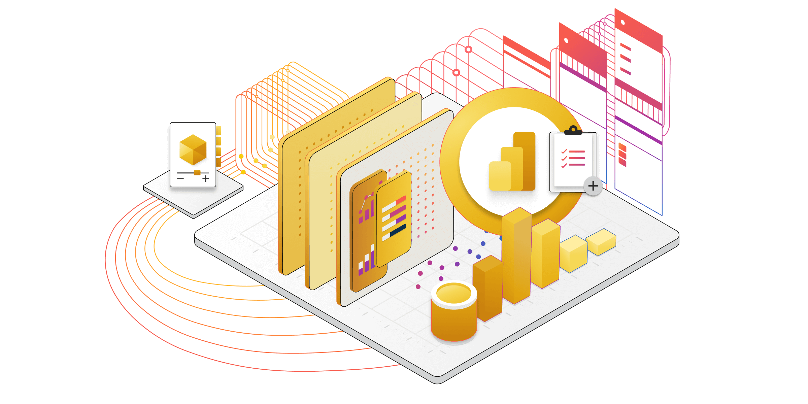

Linguagens & ETL
- Python
- Pandas / NumPy
- SQL
- ETL
Sou Vinícius Freitas. Coleto, trato e modelo dados públicos e os transformo em painéis, relatórios e análises que sustentam decisões estratégicas de negócio.
Sou formado em Engenharia de Energias Renováveis. Durante a graduação, trabalhei como estagiário no ramo de energia solar; depois, atuei como desenvolvedor mobile.
Hoje me dedico a aprofundar meus conhecimentos em dados para apoiar a tomada de decisão das empresas. Faço parte de uma comunidade de Dados e Tecnologia e evoluo por meio de cursos e projetos práticos.
Busco uma oportunidade para atuar profissionalmente como Analista de Dados, agregando valor e melhorando a performance dos negócios.
Stack que uso para levar um problema de negócio da extração dos dados ao painel de decisão.
Projetos com dados públicos, do tratamento à entrega de um painel ou relatório interativo.
Painel interativo para analisar a operação global do marketplace Fome Zero. Transforma dados de restaurantes da base Zomato em indicadores sobre expansão geográfica, posicionamento de preço, experiência do cliente e oferta gastronômica.

Relatório com dashboards interativos para análise do mercado de acomodações do Airbnb em Nova York: preços, disponibilidade e distribuição por região.

Aplicação de técnicas de análise para transformar informações do negócio em conhecimento e apoiar decisões estratégicas, usando o Excel como ferramenta principal de análise.

Painel interativo para acompanhar métricas operacionais da Curry Company, um marketplace de delivery, com indicadores e visualizações para apoiar a análise do negócio.
Estou aberto a oportunidades como Analista de Dados. Sinta-se à vontade para entrar em contato.